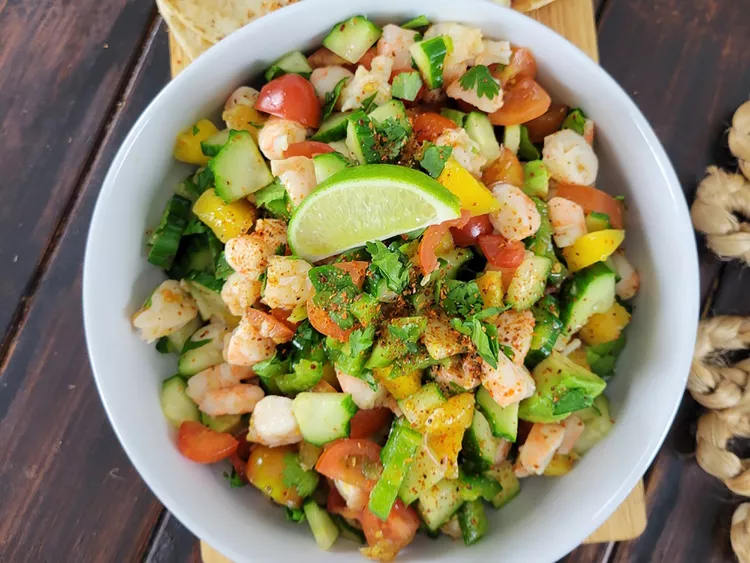

Mango Shrimp Ceviche

Description
This mango shrimp ceviche is the perfect summer dish. With crunchy
cucumber, juicy tomatoes and mango, jalapeno, and lime juice, it's light,
full of flavor, and a great combination of sweet and heat.
Ingredients
- 1 pound cooked large shrimp, cut into bite-sized pieces
- 1 cucumber, cut into bite-sized pieces
- 1 pint cherry tomatoes, halved
- 1 jalapeno pepper, thinly sliced
- 1 fresh mango - peeled, pitted, and cut into bite-sized pieces
- 1 lime, juiced, or more to taste
- 2 tablespoons chopped fresh cilantro
- 1 tablespoon chili lime seasoning, or to taste
Steps
- Combine shrimp, cucumber, tomatoes, jalapeno, mango, lime juice, cilantro, and
Tajin seasoning in a large Taste; add more Tajin if needed.
- For more flavor, cover and refrigerate for 1 hour (optional).